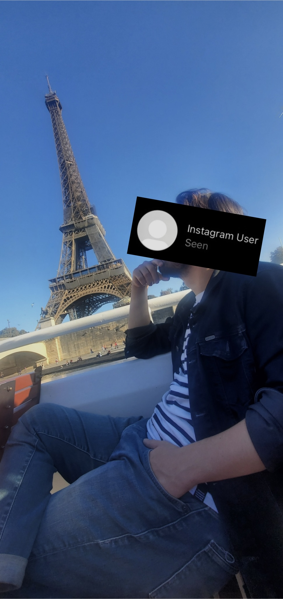

any resemblance to actual people or real events is purely coincidental


Il est arrivé avec vingt-deux minutes de retard. Pas un mot d'excuse, juste une main passée dans des cheveux trop gominés pour un mardi soir rue de la Roquette. Quand le serveur a posé la carte, il n'a même pas levé les yeux.
Une carafe d'eau, deux verres. Ça ira pour l'instant. J'ai compris à cet instant précis que les quarante-cinq prochaines minutes allaient consister à écouter un monologue interminable sur ses investissements locatifs et sa rupture de 2021.
Le silence qui a suivi sa quatrième tirade sur le marché immobilier était tellement épais qu'on entendait le grésillement du néon au-dessus du percolateur. J'ai terminé mon verre d'eau du robinet à température ambiante, j'ai posé deux euros sur la table, et je me suis levée sans me retourner.